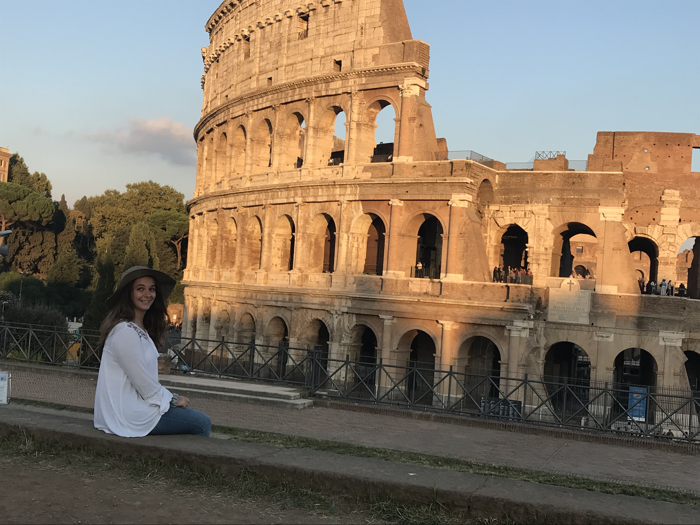

Depending on where you're coming from, traveling out of state or out of country for the first time can be
very intimidating. Even if it’s not your the native language, there are always people and signs around to
help
you navigate your new adventure.
Whether you’re wanting to go to the farthest reaches or Asia, or to our northern neighbors in Canada,
traveling away from home doesn’t have to be a scary experience.

Traveling for the first time is a unique and transformative experience! While sometimes foreign and new,
visiting a country you haven’t been to before can be a huge milestone in your life. Traveling solo can be
fun, and is an adventure all on its own. However, I’d highly recommend taking a friend or family member with
you the first time you hop on a flight out of the states.
Traveling with a friend offers a lot more safety, help, (and if they’ve traveled before) guidance.
Embarking on your first journey will open a door of self discovery and exploration.
The thrill of navigating new landscapes, trying new foods, meeting new people, and immersing yourself into a
new culture will create memories that will last a lifetime.
First time travel sparks a sense of independence and resilience in the face of unexpected challenges that
may arise. There’s always an adventure to be had!

What are some benefits of stepping out the doors for the first time?
New Experiences and Perspectives -
First-time travels offer the opportunity to explore new places, cultures, and ways of life. Experiencing
different environments can broaden your perspectives and enrich your understanding of the world.
Personal Growth -
Traveling for the first time often involves stepping out of your comfort zone. Whether it's navigating a
foreign city, trying new foods, or communicating in a different language, these challenges contribute to
personal growth and development.
Cultural Learning -
Exposure to different cultures enhances cultural awareness and fosters a deeper understanding of
global diversity. This exposure can lead to increased tolerance, empathy, and an appreciation for
the uniqueness of each culture
Build Confidence
Overcoming the initial fears and uncertainties associated with travel can significantly boost your
self-confidence. Successfully navigating unfamiliar territory and handling unexpected situations can
empower you and instill a sense of accomplishment.
Learning Adaptability
Traveling requires adaptability and problem-solving skills, especially when faced with unforeseen
circumstances. These experiences help you develop resilience and the ability to thrive in diverse
situations.
Create Lasting Memories
First-time travels often leave a lasting imprint on your memory. The excitement of discovering new
places, meeting new people, and trying new activities can create cherished memories that stay with
you for a lifetime.
Learn More About Yourself
Traveling allows you to explore different lifestyles and activities, helping you discover your own
preferences and interests. This self-discovery can lead to a more fulfilling and well-rounded life.
Step Out of Your Comfort Zone!
Traveling disrupts your regular routine, providing a break from the monotony of daily life. This
change can lead to increased creativity, inspiration, and a fresh perspective when you return home.

Witness the world with fresh eyes and take your first trip as an opportunity to step outside of your
comfort zone, and witness the world with fresh eyes.
I think you’ll come to find that as you embark on your first journey that you’ll enjoy the
experience of travel itself and not just the destination.

“We live in a wonderful world that is full of beauty, charm and adventure. There is no end to the
adventures we can have if only we seek them with our eyes open.” – Jawaharial Nehru